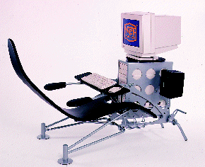
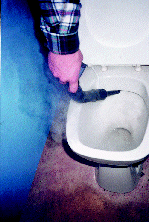
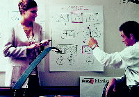
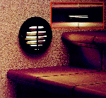
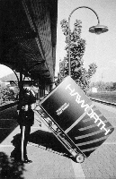

![[Forrige artikkel]](/me/ts/ne/gifs/prev.gif)
![[NE hjemmeside]](/me/ts/ne/gifs/ne-small.gif)
![[Neste artikkel]](/me/ts/ne/gifs/next.gif)

Sett deg ned, len deg tilbake, senk tastaturet og hev føttene opp på de justerbare fotstøttene. Nå er du klar for å entre cyberspace, i behagelig tilbakelent tilstand. Netsurfer er en kombinasjon av kontorpult, divan, motorsykkel og surfebrett.
Kontorhverdagen vil aldri bli den samme etter at Netsurfer er blitt allemanseie. De små datamaskinenes inntreden på kontoret er ikke blitt møtt av innovative løsninger fra designernes side. Vi setter fortsatt de små, men plasskrevende boksene oppå pulten. Tenk deg derimot et kontorlandskap møblert med Netsurfere....
Stolen er utviklet av de to unge designerne Ilkka Terho og Teppo Asikainen for den finske fabrikken Valvomo, med sponsorstøtte fra Compaq Computer Finland. Stolen er trukket med skinn, mens understell og datakasse er laget i laserskåret stål.
Netsurfer ble plukket ut til å ønske publikum velkommen ved the Alternative Office Exposition i Los Angeles i fjor høst. Så vidt vites har ikke stolen noen norsk importør, men den selges ved the Pacific Design Center i Los Angeles og i Helsinki.

Det er ikke mer enn 15 år siden de første damprengjøringsmaskinene ble introdusert i Italia. Skepsisen var stor til de små , og reflekterte det lave kunnskapsnivået rundt dampens evne til effektiv rengjøring og desinfisering.
I følge importøren SYR Master Norge A/S i Tistedal er damprengjøring uten tvil den mest miljøvennlige måten man kan gjøre rent på.
Målsetningen er å produsere maskiner av høy kvalitet tilpasset de forhold og krav som finnes på skandinaviske arbeidsplasser. SYR Master Norge A/S har enerett på import av de danske maskinene.

Selvklebende flipoverark kan limes rett på veggen, og omskape det vanligste cellekontor til et møterom i miniatyr. Arkene i den nye Post-it flipoverblokken fra 3M har et spesiallim som fester både på tapet, maling, mur, plast og glass.
Dermed kan mer av rommets veggflater utnyttes, og møtene blir mer profesjonelle og effektive.
LE/WNF

Belysningsprodusenten A/S Noral i Askim har selv utviklet designet på de nye armaturene Brick og Rondo. De kommer i fire varianter, og er beregnet for innfelt montering til trappetrinnsbelysning eller som ledelys på vegg.
Armaturene er støpt i aluminium og har borosilikat glass. Dette gjør dem anvendbare på utsatte steder med krav til vandalsikkerhet. De har tetthetsklasse IP 55, og som alle Norals produkter er de etterbehandlet etter bedriftens PolySeal-metode for å motstå korrosjon. Armaturene finnes både i rund (Rondo) og rektangulær (Brick) form, og kan leveres med og uten gitter.

Den amerikanske kontormøbelgiganten Haworth følger med i tiden, og konstaterer at "kontordesign endrer seg fordi verden er i forandring". På NeoCon-messen i Chicago i fjor presenterte Haworth og den andre amerikanske storaktøren Steelcase kompakte løsninger, mobile arbeidsenheter og spesialdesignede løsninger for hjemmekontoret.
Blant disse finner vi denne mobile enheten, som var en av Haworths ti fleksible kontorløsninger. De var mer eller mindre sammenleggbare, og med stor variasjon i mulighetene for transport. Med denne enheten er det kanskje en idé å ansette en kombinert bærer og servicemontør?